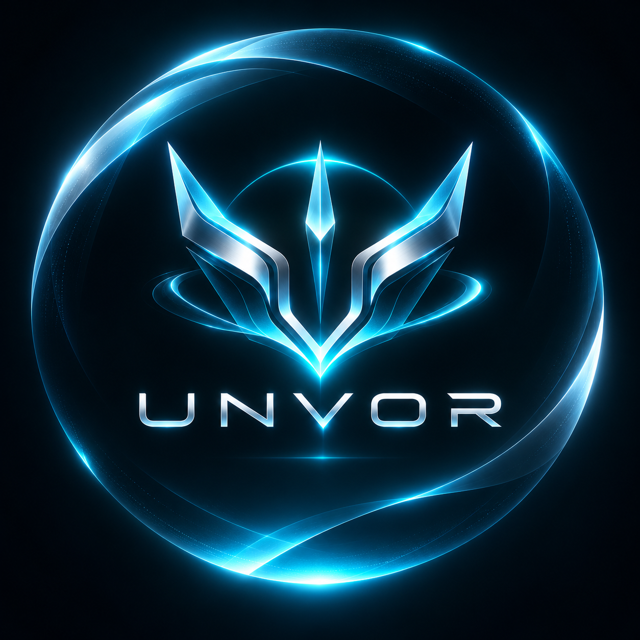
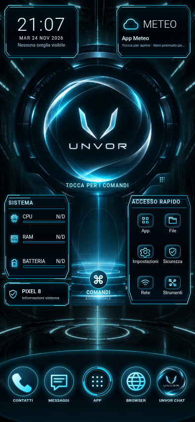

UNVOR / 01 ANDROID
Launcher
Una nuova esperienza Android: interfaccia HUD, applicazioni e strumenti quotidiani organizzati in un unico ambiente.
Accedi al modulo ↗
UNVORProgetto in sviluppoUn ecosistema progettato intorno all'autonomia digitale.
Pixel 8 · GrapheneOS come sistema di riferimento.
Relay indipendenti. Senza blockchain, nella visione del progetto.
Indipendenza e minimizzazione dei dati come obiettivi.
Esperienze complementari, integrate dalla stessa visione: restituire alle persone maggiore controllo sulla propria vita digitale.
Una nuova esperienza Android: interfaccia HUD, applicazioni e strumenti quotidiani organizzati in un unico ambiente.
Accedi al modulo ↗Messaggistica con identificativi UNVOR e rubrica reciproca. Conversazioni, gruppi e chiamate nella visione del prodotto.
Accedi al modulo ↗Una rete progettata per distribuire le comunicazioni attraverso nodi relay indipendenti, senza un unico centro.
Accedi al modulo ↗Un'interfaccia ispirata ai sistemi HUD, progettata per il Pixel 8 con GrapheneOS. UNVOR personalizza l'esperienza senza sostituire il sistema operativo.

La rubrica UNVOR utilizza identificativi dedicati. La regola progettuale prevede che entrambi gli utenti si siano aggiunti reciprocamente prima di comunicare.
Il pannello è una rappresentazione illustrativa del progetto, non una prova delle funzionalità o della sicurezza dell'app.
La federazione di relay indipendenti è pensata per consentire l'accesso anche a chi non gestisce un proprio server.
I relay sono progettati come intermediari. L'obiettivo è minimizzare la conservazione di dati e metadati; le proprietà effettive richiedono verifiche.
La simulazione è locale e puramente illustrativa: non controlla server reali, non verifica la resilienza della rete.
Scelte tecniche trasparenti, verifiche e controllo dell'utente. Nessuna promessa di sicurezza assoluta.
Permessi espliciti e strumenti comprensibili sono alla base dell'esperienza.
Obiettivo: componenti UNVOR senza dipendenze obbligatorie da account e servizi Google.
Il sistema operativo conserva le responsabilità di sicurezza di base. UNVOR si concentra sulle proprie funzioni.
Le proprietà di privacy e sicurezza devono essere dimostrate da test e revisioni, non soltanto dichiarate.
Il nostro obiettivo è un ecosistema open source: codice verificabile, release pubbliche e licenze aperte.
UNVOR Chat Pilota 366: versione sperimentale disponibile sul canale originale di sviluppo.
Release Pilota 366 ↗Centro GitHub UNVOR ↗Sorgenti del Launcher consultabili. L'APK firmata per la distribuzione pubblica non è ancora verificata.
Da pubblicareSorgenti Launcher ↗Il codice applicativo è consultabile sotto BSL 1.1, con restrizioni alla redistribuzione. La transizione verso una licenza open source richiede la verifica dei diritti.
Licenze e attribuzioni ↗La Chat Pilota 366 è presente su GitHub; firme e compatibilità non sono state verificate qui. Le release nel nuovo repository sono ancora da pubblicare.
No. Il progetto comprende un launcher Android, una chat e una rete di relay. GrapheneOS è il sistema di riferimento sul Pixel 8.
L'obiettivo è offrire componenti utilizzabili senza account Google o dipendenze obbligatorie dai suoi servizi.
Nella configurazione prevista sarà possibile utilizzare nodi pubblici; la disponibilità dipenderà dal rilascio della rete.
Consulta la sezione Download per il repository pubblico e la pagina delle release. La disponibilità degli APK non è stata verificata.